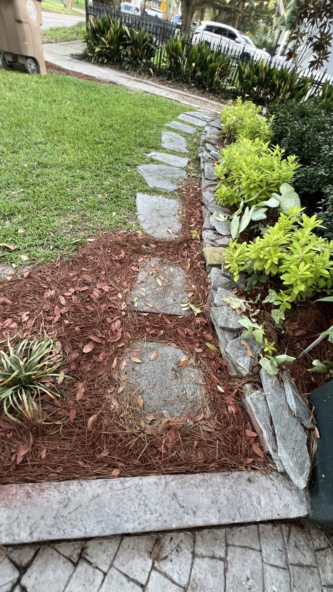

From the blog
Roof Soft Washing in Mobile, AL: What Those Dark Streaks Mean
October 26, 2026

Drive through West Mobile, Midtown Mobile, Saraland, or Daphne and you will see the same thing on roof after roof: dark streaks running down from the ridge. Most homeowners assume the roof is just old. In Mobile, those streaks are usually algae feeding on the limestone filler in asphalt shingles, helped along by our humidity, shade from pines, and long wet summers. The roof is not necessarily worn out. It is dirty in a way that rain alone will not fix.
That is where roof soft washing comes in. It is not pressure washing. It is a low pressure wash with a cleaning solution that kills the algae and rinses the roof clean without blasting shingles apart.
Why you should never pressure wash a roof
High pressure water strips the protective granules off asphalt shingles. Those granules are what shield the shingle from sun and weather. Once they are gone, the shingle wears faster, and the damage is hard to undo. Pressure can also force water under shingles and into the roof deck. A roof that looked streaky can end up leaking, all from trying to clean it the fast way.
Soft washing avoids that trade. The solution does the cleaning work, and the rinse is gentle. The roof gets clean without losing granules.
What roof soft washing covers
- Algae streaks. The dark vertical stains that make a roof look ten years older than it is.
- Moss and lichen spots. Growth that holds moisture against shingles, common on shaded, north facing slopes.
- Dirt and leaf buildup. Debris in valleys and along ridges that traps water after storms.
- A full rinse. Gutters and nearby siding get rinsed down after the roof wash so cleaning solution does not sit where it should not.
Results are not always instant. Some staining lightens over days after the wash as the solution keeps working. That is normal, and it beats the alternative of stripping the roof to get an instant result.
How often does a Mobile roof need it
Most Mobile roofs need a soft wash every few years, sooner if the home sits under heavy tree cover or on a shaded lot in Semmes, Grand Bay, or Irvington. Homes in full sun may go longer. A good rule is simple: if you can see streaks from the street, the algae is established enough to be worth treating. Waiting until moss takes hold makes the job harder and keeps moisture against the roof longer.
Fall is a practical time to book it. Trees drop leaves, storms slow down, and a clean roof heads into winter without a layer of growth trapping moisture.
What it costs
Roof soft wash on our pay page is $549 for one story homes up to 2,000 sq ft of roof. Steeper or larger roofs get a free custom quote, so you know the price before work starts. If you are booking more than one service, 3 or more services get 10 percent off on the pay page, which makes pairing a roof wash with a house wash, gutter cleaning, or driveway wash a sensible bundle.
Gutter cleaning itself is $179 for one story homes, and it pairs naturally with a roof wash since roof debris ends up in the gutters. Clearing both at once keeps water moving off the roof and away from the foundation.
What to check before you book anyone
- Ask if they soft wash or pressure wash. If the answer is pressure, look elsewhere.
- Ask how they protect plants. Shrubs and grass around the home should be rinsed and protected during the wash.
- Ask about steep roofs. Some roofs need a custom quote and extra safety care, and that should be clear up front.
- Stay off the roof yourself. Wet shingles are slick, and Mobile roofs after a rain are no place for a ladder experiment.
Streaks on your roof? Let us take a look.
Kinney Cleaning Services does roof soft washing across Mobile County and the Eastern Shore. Veteran owned and operated.
Call (251) 767-0754 Get a Custom Quote